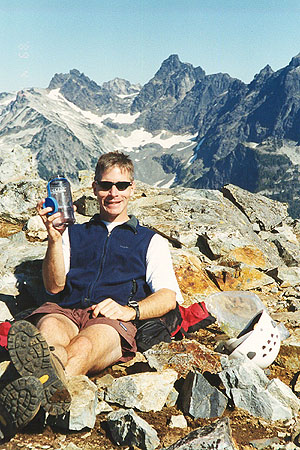
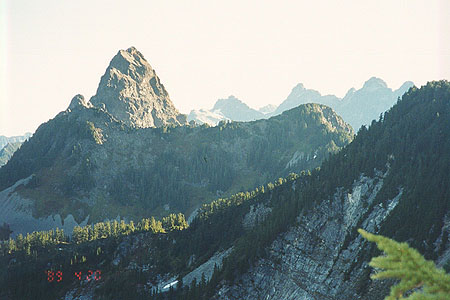
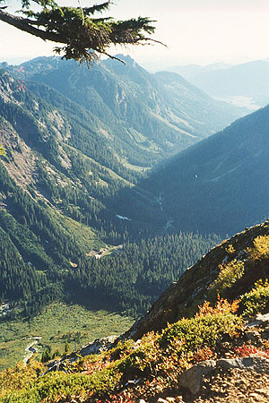
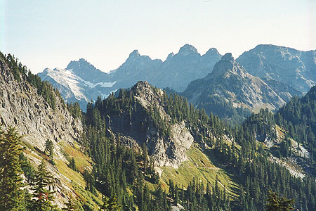
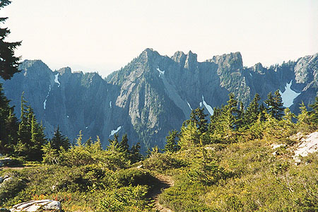
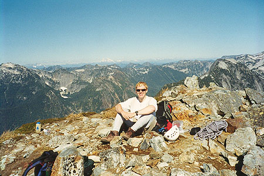
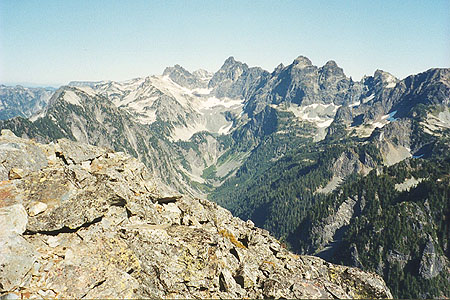

Mount Thompson
With the good weather forecast, I was hoping for a weekend bursting with mountain climbs! Sadly, Steve was detained at work, so our planned climb of the West Face of Sloan Peak had to be canceled (this climb always seems to get canceled!). I searched for something I could do on my own, perhaps some scrambling and rappelling. I settled on the Snoqualmie Pass area, with a nice walk up to the Kendall Katwalk, and a climb of Mount Thomson. The Beckey “Bible” stated I could access Red Mountain from the area, and I hoped to climb Huckleberry Mountain too. I packed for overnight, needlessly bringing a bivy sack against non-existent wet weather.
I had also purchased 50 meters of 6 mm static line, for a primitive rappel setup.







Kris dropped me off at the PCT trailhead at 7:15 am, where I got some information about the old trail to Red Mountain. It was easy to find, and after only one mile of walking I reached a point that took 2.75 miles to reach had I taken the long, switch-backing PCT. Happily, I moved along, rising and eventually working around Kendall Peak on the PCT with great views of Mt. Rainier and local peaks such as Guye, Snoqualmie and Lundin. I really enjoyed the stretch of trail from the Kendall Katwalk to Ridge Lake. It looks down on a green valley, with bouldery meadows on either side of the trail. Great views of Mount Thomson.
I got water at Ridge Lake, easily found Bumblebee Pass, and was soon descending into Thomson’s protected basin. Edd’s Lake seemed very mysterious and remote in a hanging valley below. Descending into the basin was difficult due to fresh snow and ice coating the boulders. Time consuming! But soon I was back in the sun and marmots eyed me warily from only 5 feet away.
There were two obvious gullies leading up to the east ridge of the peak. The book advises taking the left gully. Hmm. The left gully looks loose at the bottom and 5.hard for 20 feet before hitting the ridge. The right gully looks cleaner, and features a steep heather slope and no rock climbing. But it seems like you might get stopped by a cliff break in the ridge. Anyway, the book says to take the left gully. So reluctantly, I took it, climbing rock, heather, and dirt slopes. Everything was loose, and I accidentally sent a few loud volleys of stone crashing down into the basin. Oops!
I moved out of the gully into a low-angled chimney cleaving the right wall where the rock was more solid. I could see a tree on the ridge 35 feet above. Switching to rock shoes, I started up a side of the gully wall (the top of the gully was blocked by a huge, overhanging chockstone), and immediately realized I wouldn’t/shouldn’t do this. The rock was vertical with occasional bulges to navigate around, and a fall would send me into the gully on a brutal descent. I carefully climbed down, said “forget it, I’m looking into the right gully whatever the book says!” and began the tedious work of down-climbing the entire gully.
I was doing this, and noticed a climber in the basin looking up at me. As I got closer, he waved and suggested a line on the left side of the gully. I traversed to it as he approached, and started up an exposed 3rd/4th class ramp angling towards the west ridge. Somewhere in here we introduced ourselves, and David went up to yet another line in the gully. I gave up on my ramp, as it wound out of sight with dramatic exposure. I was already a little frazzled!
David was stumped at a 6 foot difficult move that appeared to lead to easier ground, and I didn’t want to try it either. Finally, we both agreed to down-climb and take the right gully.
This we did, and lo! This gully led to the ridge easily, and then a trail on steep heather took us to a bracing viewpoint of the north side of the mountain, complete with snowy ledges and a 1000 foot vertical drop. Past this, we had more heather, then easy rock scrambling. The route wound around to the south, then ascended steeply on good rock with an unneeded handline. We reached a rappel station, then grandly walked the final 20 feet to the summit. Yes!
We took pictures and reveled in the view. It was good to have a partner on the scary stuff below, and the additional energy two people can muster may have helped us persevere in spite of those difficulties. Hey David, if you are out there, that was fun!
We didn’t break out the rope at the rap station, comfortable with the down-climbing which was nothing like what we experienced in the gully. I lost points for cracking and grabbing the handline near the bottom of the stemming crack! With each step down the steep heather I regretted not bringing hiking poles, as David had wisely done! Monday, my thighs still ached…
Once in the basin, my ambitious plan to climb Huckleberry Peak seemed ridiculous. I was pretty beat, so I sat for a few minutes, eating and drinking water from the trickling snowmelt. It was about 3 pm. I decided to go ahead on the PCT around and camp below Chikamin Peak, and climb it the following morning.
Foolishly, I cached my rappel/climbing equipment at the top of Bumblebee Pass. With lowering energy, I continued on the PCT, finally working my way around Alaska Mountain to a view of Huckleberry across the valley. I was low on water, and didn’t see how to get any for miles without a lot of effort. Here, I also realized that the distance to Chickamin Peak was far greater than I thought! I had to meet Kris at Snoqualmie Pass at 5:30 pm the next day, and wasn’t too sure about walking 14 miles after climbing Chikamin and making it on time!
So, with heavy heart I turned back. My choices for the next day were now limited to Red Mountain or Lundin Peak. I picked up my cached gear (the climb up to the Pass was exhausting!), and tiredly built a camp at Ridge Lake. I was sleeping by the time it was dark.
In the morning I felt much better, and was walking back to the Kendall Katwalk by 7:15. I met a climber who started from the parking lot at 2:30 by the lake. He headed for the east ridge. Later, I met a pair going to the west ridge. Shortly before the Katwalk, I left my gear and headed up steepening slabs and heather, coming to a grand view of a snowy basin on the other side. From what I could see, moving along this ridge to Red Mountain was going to be tough. I climbed down then up again to a tri-corner ridge crest, then carefully followed the ridge down towards Red Mountain. The exposure was incredible on the snowy, shadowed side, where I edged around small gnarled trees. Eventually, and with some relief the left side angled back, permitting walking on steep heather. Finally I had to step up to the ridge crest again, and here learned that I wasn’t going any farther. The ridge dropped off to a low saddle, and there was no way I would try and descend that alone.
Oh well, so for like the 3rd time this weekend I wimped out, working my way back, and slowly down to the trail via heather and boulders. It was only 10:30 am, but I realized I was probably done! There weren’t any other grand mountains for me to climb, so I walked back, scrambling up a subridge of Kendall Peak on the way. Later, I called Kris from the cell phone, so she could pick me up at 1:15. For the way down, I just concentrated on the awesome view, stopping to rest often and prolong my visit to the wilderness. I ran into a thru-hiker, almost finished with his long journey from Mexico. Lots of people with dogs crowded the lower reaches of the trail, and the “city-trail” phenomenon occurred. This is when people start looking straight ahead on the trail and not acknowledging you when they pass! I make sure to give a hearty “hello” which just irritates them! I wonder, do they think it increases the “wilderness experience” to bring city rules to the trails? The eye that perpetually seeks to avoid contact, hmm. I’ve noticed that 2 of the 3 need to be satisfied for the effect to fade:
- Greater than 1 hour drive from town
- Greater than 3000 feet hiked up
- Greater than 4 miles in
So Kris picked me up, and we had a hilarious evening at the final Almost Live! taping, a great (now defunct) Seattle comedy program.
Lesson: trust your instincts, not some book, even if it is the “Bible!”